Escoamento Interno
Objetivo
Determinar o fator de atrito em escoamentos internos.
Aparato experimental:
Tubos de diferentes diâmetros conectados a manômetros diferenciais, reservatório coletor, cronômetro e régua.
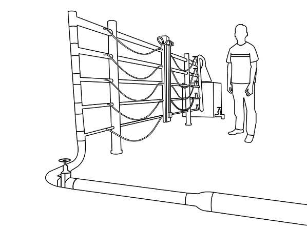Seleção de tubo do diâmetro desejado.
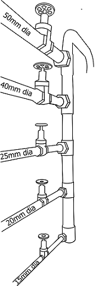Todos os tubos permanecem fechados, exceto o tubo selecionado.
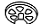 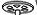A válvula de entrada principal é aberta para permitir o fluxo de água através do tubo selecionado. Abra a válvula e altere a posição do registro do manômetro para colocá-lo na posição de retirada de ar da tubulação.
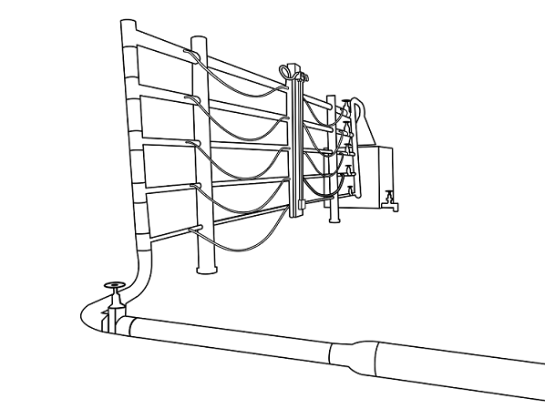 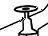 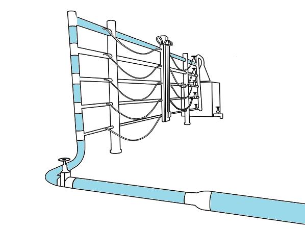 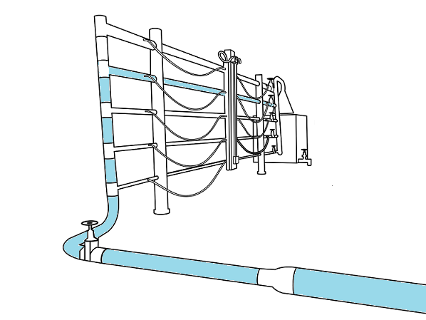 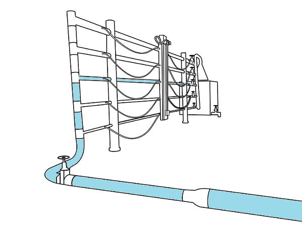 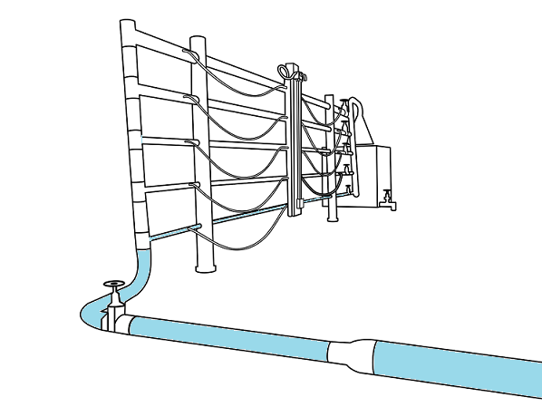 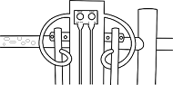Posição Isolada
Posição Saída de Ar
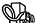 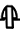
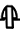
Altere a posição do registro do manômetro para a posição de leitura para medir a pressão quando o escoamento atingir o regime permanente. Abra a válvula de saída para o reservatório de coleta para permitir o escoamento contínuo na tubulação.
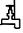Anote a leitura do manômetro.
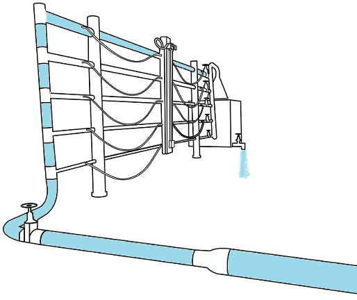 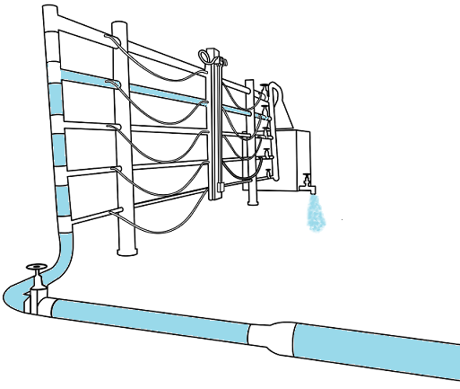 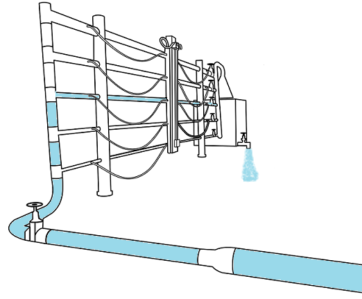 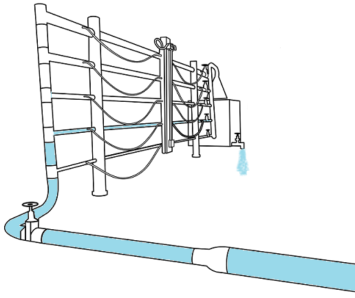 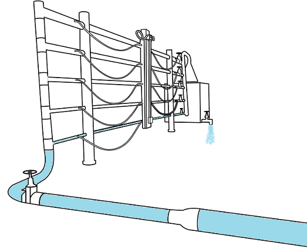A válvula de saída para o reservatório de coleta é fechada quando o nível atinge 10cm e o tempo no cronômetro é registrado.
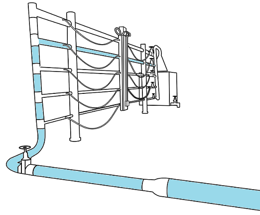 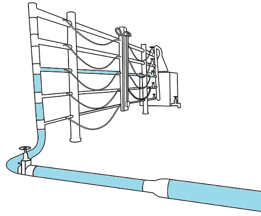Nível inicial = 55cm
Nível final = 65cm
Aumento (h) = 10cm
Observação
Comp. do Tubo (l) = 3m
Área do reservatório (A) = 3500cm2
Aumento do Nível (h) = 10cm
Gravidade (g) = 981 cm/sec2
Cálculos
Tentativa =

FECHADO
FECHADO
FECHADO
FECHADO
FECHADO